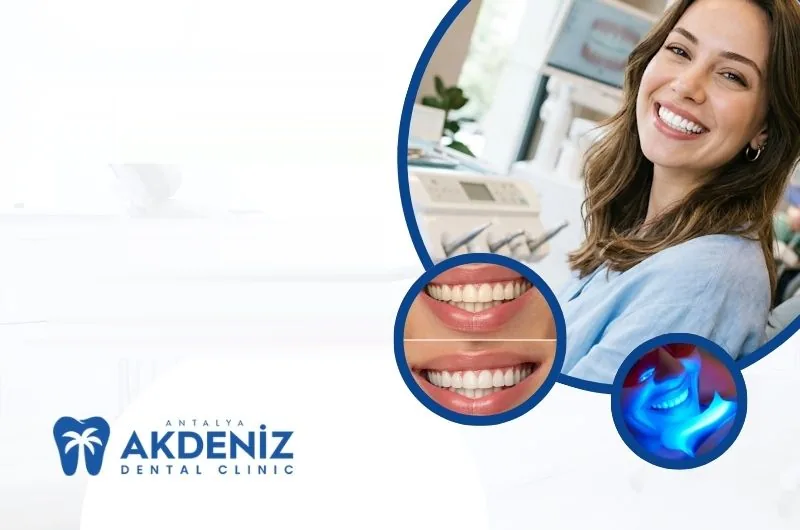

Отбеливание зубов в Анталии, ТурцияОтбеливание зубов — это эстетическая стоматологическая процедура, которая делает зубы белее и ярче. Она осветляет цвет зубов, не повреждая эмаль и не удаляя ни одного слоя с поверхности зуба.Отбеливание зубов (осветление зубов) — это эстетическая стоматологическая процедура, цель которой — сделать зубы белее и ярче. Процедура проводится для осветления цвета зубов без повреждения эмали и без снятия какого-либо слоя с поверхности зуба.
Почему выбирают отбеливание зубов?
Отбеливание выбирают не только ради «более белых зубов»: это ещё и самый распространённый эстетический стоматологический метод, позволяющий выглядеть здоровее, увереннее и моложе. Чаще всего отбеливание зубов выбирают по следующим причинам:
Эстетика и молодой вид
Более яркая улыбка:
Главная цель — удалить пятна и непривлекательные изменения цвета, чтобы зубы выглядели белее и ярче. Отбеливание может осветлить зубы на 5–8 оттенков по 16-оттеночной шкале.
Омолаживающий эффект:
Отбеливание зубов — сравнительно простой способ «преображения», который помогает выглядеть моложе и здоровее без серьёзных изменений в образе жизни.
Коррекция возрастного изменения цвета:
С возрастом эмаль истончается, а лежащий под ней более желтоватый слой дентина становится заметнее, из-за чего зубы выглядят темнее. Отбеливание помогает обратить этот процесс.
Социальные и психологические факторы
Больше уверенности в себе:
Белые зубы помогают человеку быть довольным своей улыбкой и тем самым повышают уверенность в себе в общении.
Профессиональный вид:
Особенно в деловой среде ухоженная улыбка положительно влияет на профессиональный имидж и внешний вид в целом.
Удаление пятен и изменений цвета
Зубы могут менять цвет как из-за внешних (поверхностных), так и из-за внутренних (глубоких) факторов:
Внешние пятна:
Такие привычки, как употребление кофе, чая, красного вина, тёмных кислых напитков и курение, могут вызывать пятна, которые закрепляются в порах эмали.
Внутренние изменения цвета:
- Антибиотики, например тетрациклин, принимаемые в период формирования зубов, могут вызывать серо-голубые полосы на зубах.
- После удара нерв внутри зуба может погибнуть, и зуб становится розовым, серым или чёрным.
- Коричневые или белые пятна из-за избыточного поступления фтора в период формирования зубов.
- Генетические нарушения формирования эмали или дентина.
Клинические преимущества
Щадящий метод: поскольку отбеливание проводится без удаления тканей с поверхности зуба и без повреждения эмали, это гораздо более щадящий подход, чем более инвазивные альтернативы, такие как виниры или коронки.
Экономичность: по сравнению с другими эстетическими стоматологическими процедурами отбеливание считается одним из самых экономичных способов улучшить улыбку.
Кому может подойти отбеливание зубов?

- Всем, у кого здоровая полость рта: процедура подходит людям с хорошим в целом состоянием полости рта.
- Тем, у кого есть пятна от еды и напитков: людям с поверхностными или глубокими пятнами на зубах из-за регулярного употребления кофе, чая, красного вина, тёмных фруктовых соков и кислых напитков.
- Курильщикам: людям, у которых из-за сигарет или других табачных изделий появились стойкие жёлтые или коричневые пятна.
- Тем, у кого возрастное изменение цвета: людям, чьи зубы с возрастом выглядят желтее или темнее из-за износа эмали и потемнения дентина.
- Тем, у кого внутреннее изменение цвета:
- Тем, у кого есть зубы после травмы или лечения каналов: людям, у которых зубы утратили жизнеспособность после удара или потемнели изнутри после эндодонтического лечения (в таких случаях может применяться внутреннее отбеливание).
- Тем, кто хочет улучшить эстетику и стать увереннее: людям, которые хотят выглядеть моложе, здоровее и профессиональнее и связывают белые зубы с социальным и психологическим успехом.
Какие существуют методы отбеливания зубов?
Методы отбеливания зубов в целом различаются по месту проведения, состоянию зуба и концентрации используемых веществ:
Кабинетное (клиническое) отбеливание
Это профессиональный метод, который проводит стоматолог в условиях клиники.
Процедура:
Стоматолог защищает дёсны и ткани полости рта с помощью защитных барьеров или ретракторов. Затем на зубы наносится гель с высокой концентрацией перекиси водорода (обычно 25–40%).
Продолжительность:
Гель обычно оставляют на поверхности зуба на 15–30 минут, и за один визит процедуру могут повторить несколько раз. Общее время лечения составляет от 30 до 90 минут.
Активация светом/лазером:
В некоторых системах для ускорения отбеливания используются интенсивные источники света — светодиоды, лазеры, галогенные лампы — или тепло.
Домашнее отбеливание (под контролем стоматолога)
Этот метод считается самым безопасным, популярным и наиболее изученным.
- Стоматолог снимает слепок зубов пациента, чтобы изготовить индивидуальные прозрачные капы. Пациент наносит в эти капы назначенный стоматологом отбеливающий гель (обычно 10–16% перекиси карбамида или 6% перекиси водорода) и надевает их на зубы.
- В зависимости от вида геля капы можно носить 90 минут днём или ночью во время сна. Обычно, чтобы зубы достигли желаемого оттенка, требуется от 3 дней до 6 недель.
Отбеливание депульпированных зубов (после лечения каналов)
Это специальные методики для зубов, которые потемнели и утратили жизнеспособность после травмы или эндодонтического лечения.
- Внутреннее отбеливание: отбеливающее средство помещают непосредственно в пульповую камеру через отверстие, созданное с задней стороны зуба.
- Метод «walking bleach»: смесь пербората натрия с физраствором или перекись карбамида помещают внутрь зуба и закрывают временной пломбой. С этим материалом пациент несколько дней живёт обычной жизнью; при необходимости процедуру повторяют с недельными интервалами.
- Комбинированная внутренняя/внешняя методика: гель наносят одновременно внутри и снаружи зуба (с помощью индивидуальной капы).
Безрецептурные средства
- Это средства, которые продаются в магазинах или аптеках и не требуют контроля стоматолога.
- Методы: отбеливающие полоски, гели, наносимые кисточкой, ополаскиватели, жевательные резинки и отбеливающие зубные нити.
- Эффективность: концентрация отбеливающего вещества в этих средствах (0,1% перекиси водорода) очень низкая, поэтому они не так эффективны, как профессиональные методы, и обычно действуют только на поверхностные пятна.
Отбеливающие зубные пасты и микроабразия
- Отбеливающие зубные пасты: они не меняют естественный цвет зуба, а удаляют поверхностные пятна при чистке благодаря мягким абразивам (например, кремнезёму) и моющим компонентам в составе. Они помогают сохранить естественный оттенок зуба.
- Микроабразия: процедура, при которой на поверхность зуба наносят кислоту, чтобы отполировать и удалить очень тонкий слой эмали; она может быть особенно эффективна для удаления коричневых пятен.
Методы отбеливания зубов и показания к ним
|
Метод отбеливания |
Подходящие ситуации / клинические показания |
|
Кабинетное (Power/лазерное) отбеливание |
Пациенты, которым нужен немедленный результат (30–90 минут); пятна от тёмной еды и напитков, курения и общее возрастное пожелтение. |
|
Домашнее (ночное) отбеливание с капами |
Общие жёлтые, коричневые или оранжевые пятна; считается «золотым стандартом» по безопасности и долгосрочной эффективности; идеально для пациентов с чувствительными зубами (при более низких концентрациях, например 10% ПК). |
|
Домашнее (дневное) отбеливание с капами |
Пациенты, которые предпочитают более короткое ношение (30–90 мин), или пациенты с бруксизмом (ночным скрежетом), у которых ночное ношение кап неэффективно из-за вымывания геля. |
|
Продолжительное домашнее лечение |
Стойкие пятна, например от никотина или флюороза (1–3 месяца), а также тетрациклиновые/антибиотиковые пятна, при которых может потребоваться от 2 до 6 месяцев ночного лечения. |
|
Внутреннее отбеливание (депульпированных зубов) |
Отдельные тёмные зубы с некрозом пульпы после травмы или изменившие цвет после лечения каналов. |
|
Микроабразия |
Отдельные дефекты поверхности, такие как коричневые участки, белые пятна или крапчатость эмали. |
|
Отбеливающие пасты и безрецептурные средства |
В основном для поддержания белизны после профессионального лечения и удаления внешних (поверхностных) пятен. |
Какие побочные эффекты возможны при отбеливании зубов?
Хотя отбеливание зубов в целом считается безопасной процедурой, возможны некоторые временные побочные эффекты:
- Чувствительность зубов: самый частый побочный эффект, который может возникать у 75% пациентов. Обычно она лёгкая или умеренная, временная и появляется во время или сразу после процедуры.
- Раздражение дёсен (мягких тканей): возникает из-за длительного контакта отбеливающего геля с дёснами. Этот риск можно снизить, правильно используя капу и удаляя излишки геля.
- Резорбция корня: состояние, при котором организм «разрушает» корень зуба; это очень редкое, но серьёзное осложнение отбеливания.
- Усиление существующих белых пятен: белые пятна на зубах, вызванные деминерализацией, после процедуры могут стать заметнее.
Сколько держится эффект отбеливания?
Продолжительность эффекта отбеливания зависит от метода и привычек пациента:
- Общая продолжительность: при правильном проведении процедуры достигнутый оттенок обычно сохраняется от 18 до 24 месяцев. Некоторые исследования показывают, что результат домашнего отбеливания 10% перекисью карбамида может сохраняться до двух лет.
- Факторы, сокращающие эффект: курение и окрашивающие напитки, такие как чай, кофе и красное вино, приводят к более быстрому исчезновению белизны.
- Поддержание: регулярное использование отбеливающих паст помогает сохранить цвет и удалять поверхностные пятна.
Уход и меры предосторожности после отбеливания зубов
Чтобы продлить результат отбеливания и справиться с возможными побочными эффектами, после процедуры следует соблюдать следующие правила ухода и меры предосторожности:
Питание и пищевые привычки
- Избегайте окрашивающих продуктов: во время лечения и сразу после него, когда зубы склонны к окрашиванию, следует избегать продуктов и напитков с интенсивным цветом, таких как карри, красное вино, томатные соусы и подобные им.
- Чувствительность к горячему и холодному: в первые 24–48 часов после отбеливания зубы могут сильно реагировать на перепады температуры, поэтому желательно не есть очень горячую или очень холодную пищу.
- Табак: курение и другие табачные изделия очень быстро вновь окрашивают зубы, поэтому от этих привычек следует отказаться.
Гигиена полости рта и сохранение результата
- Регулярная чистка щёткой и нитью: продолжайте чистить зубы дважды в день пастой с фтором и очищать межзубные промежутки зубной нитью или межзубным ёршиком.
- Средства ухода: отбеливающие пасты помогают сохранить белизну, удаляя новые поверхностные пятна, а не осветляя естественный оттенок зубов.
- Биоактивные пасты: пасты с биоактивным стеклом можно использовать для реминерализации эмали и снижения чувствительности.
Как справиться с чувствительностью
- Временная чувствительность: в течение нескольких дней после отбеливания чувствительность зубов — это норма. Если она сохраняется, можно принимать лёгкие обезболивающие по рекомендации стоматолога.
- Изменения в домашнем лечении: если вы пользуетесь домашним набором и ощущаете чувствительность, можно продолжить лечение, делая перерыв в один день между процедурами или сократив время аппликации.
- Специальные пасты: нанесение десенситайзера в капы на 30 минут или ношение их с ним всю ночь может помочь уменьшить чувствительность.
Клинические и реставрационные процедуры
После завершения отбеливания нужно подождать не менее двух недель, прежде чем ставить пломбы, делать композитную реставрацию или керамические реставрации, чтобы цвет зубов полностью стабилизировался, а прочность сцепления с эмалью вернулась к норме.
Хранение средств (для домашних наборов)
Чтобы отбеливающие гели сохраняли эффективность, их нужно хранить дома в холодильнике и в недоступном для детей месте.
Отбеливание зубов в Турции: частые вопросы
Больно ли отбеливать зубы?
Во время процедуры боли нет. Однако после неё может появиться чувствительность зубов, особенно при употреблении горячей или холодной еды и напитков. Это временно и обычно проходит само в течение 24–48 часов.
Подходит ли отбеливание зубов всем?
Нет. Отбеливание зубов не рекомендуется в следующих случаях:
- Беременным и кормящим женщинам
- Лицам младше 18 лет
- При выраженной рецессии дёсен или заболеваниях дёсен
- При наличии пломб, виниров, коронок или имплантов (они не меняют цвет так, как естественные зубы)
- При кариесе или трещинах эмали (их нужно сначала вылечить)
Отбеливаются ли пломбы, виниры или импланты?
Нет. Отбеливание действует только на естественные ткани зуба. Керамические виниры, цирконий, композитные пломбы или импланты не поддаются действию отбеливающих средств. Поэтому после процедуры цвет существующих реставраций может не совпадать с цветом естественных зубов.
Сколько держится результат отбеливания зубов?
Он не постоянный. В среднем результат сохраняется от 6 месяцев до 3 лет. Курение и окрашивающие продукты и напитки, такие как чай, кофе и кола, сокращают срок сохранения результата. Регулярный уход и поддерживающие процедуры отбеливания помогают его продлить.
По теме: Сколько держится отбеливание зубов?
Вредит ли отбеливание зубной эмали?
При проведении под контролем стоматолога, с правильными средствами и в течение подходящего времени, отбеливание не наносит эмали необратимого вреда. Однако неосторожное, чрезмерное или длительное применение средств с высокой концентрацией может привести к эрозии эмали и стойкой чувствительности.
Сколько сеансов нужно для отбеливания зубов?
Кабинетное отбеливание обычно занимает один сеанс (45–90 минут). При очень стойких пятнах или если желаемый оттенок не достигнут, повторный сеанс можно провести через 1–2 недели. Домашнее отбеливание, напротив, обычно требует регулярного применения ночью или днём в течение 10–14 дней.
Какие изменения цвета лучше всего поддаются отбеливанию?
- Лучший результат: естественное возрастное пожелтение, пятна от курения, чая и кофе.
- Умеренный результат: пятна из-за флюороза (избытка фтора), лёгкие тетрациклиновые пятна.
- Слабый результат или его отсутствие: серо-голубое окрашивание из-за антибиотиков (тетрациклина), генетически обусловленные серые оттенки и изменение цвета зубов после травмы.
Будет ли жечь дёсны во время отбеливания?
При кабинетном отбеливании стоматолог закрывает дёсны защитным барьером (латексным или полимерным). При домашнем отбеливании, если капы плохо прилегают, гель может попасть на дёсны и вызвать кратковременное жжение. Это временно и проходит после полоскания водой.
Безопасно ли отбеливать зубы дома без стоматолога?
Универсальные капы или отбеливающие гели с большим количеством абразивов не рекомендуются. Такие средства могут вызвать химические ожоги дёсен, неравномерное изменение цвета зубов и эрозию эмали. Безопасное домашнее отбеливание проводится только с индивидуальными капами, изготовленными стоматологом.
По теме: Безопасно ли отбеливать зубы дома без стоматолога?
Можно ли отбеливать зубы во время беременности?
Как правило, отбеливание зубов не рекомендуется во время беременности и грудного вскармливания. В этот период советуют только снятие зубного камня и профилактический уход.
Как часто можно отбеливать зубы?
Стоматологи обычно рекомендуют повторять кабинетное отбеливание раз в год. Поддерживающее домашнее отбеливание можно проводить короткими курсами по 3–5 дней каждые полгода. Слишком частое отбеливание может ослабить эмаль и привести к стойкой чувствительности.
Станут ли зубы после отбеливания белее своего естественного цвета?
Да, но есть предел. Отбеливание помогает зубам достичь самого светлого оттенка в пределах их естественных возможностей. Искусственная белизна, известная как «фарфоровый белый», на естественных зубах обычно недостижима. Идеальный результат — белизна, которая сохраняет естественный вид, не выглядит чрезмерной и гармонирует с чертами лица.
Отбеливает ли зубы чистка щёткой или пищевая сода?
Чистка зубов удаляет налёт, но не меняет цвет зубов. Пищевая сода — абразивное вещество; регулярное её применение вызывает микротрещины и стирание эмали. Со временем это приводит к тому, что зубы легче окрашиваются, и к стойкой чувствительности. Химическое отбеливание (на основе перекиси) — не то же самое, что механическая чистка (содой).
Почему после отбеливания зубы выглядят полосатыми?
Обычно это вызвано дегидратацией (пересыханием). Отбеливающий гель временно подсушивает зубы, и переходы между эмалью и дентином могут стать заметнее. Обычно такой вид исчезает в течение 24–72 часов, когда слюноотделение возвращается к норме. Если он сохраняется, причиной могут быть имеющиеся трещины эмали или флюороз.